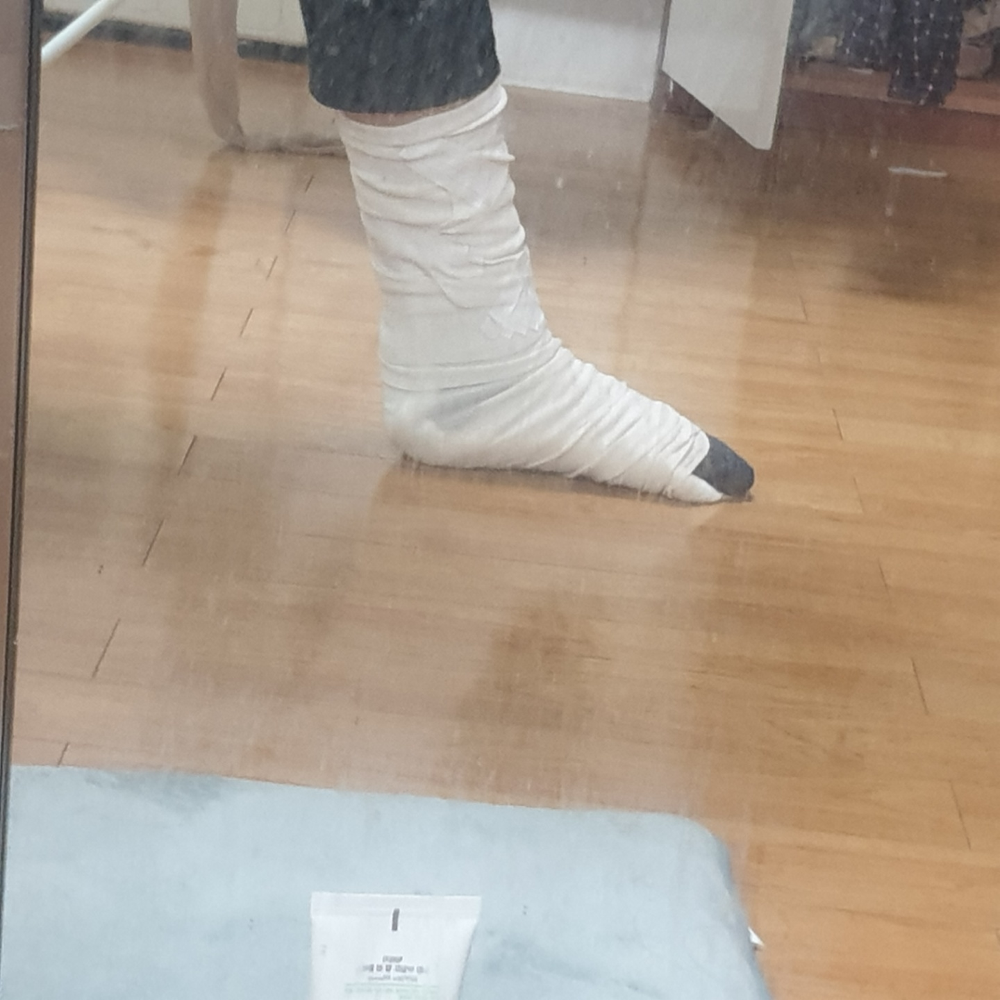
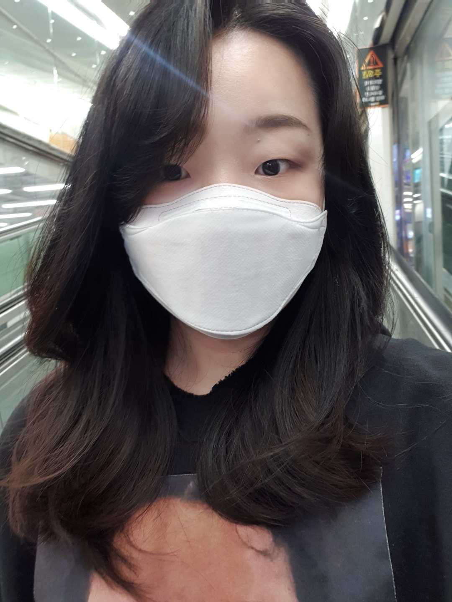
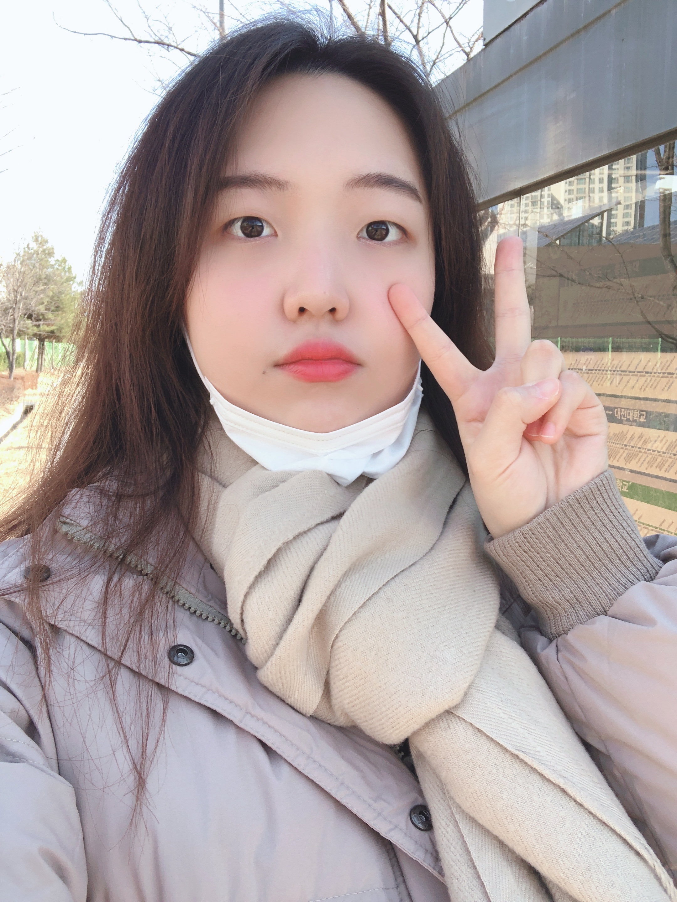

혜진이는 노예라는 별명을 가지고 있다.
조심성이 없어서 다쳐서 다리에 엄청난 멍이 들고 깁스를 하였지만
현재 발목보호대를 차고 다니는 생활을 한다.

바보바보
요리도 잘해서 집밥을 많이 해먹고 좀있으면 이사간다. 놀러가고 싶지만 서울 코로나 너무 심해서
갈 수 있을 지가 걱정이다
코로나 없어져라아아아
혜진이는 앞머리가 있었다가 없었다가 한다
앞머리 없을 때의 모습은 다음과 같다

혜진이의 코딩 실력을 따라잡기 위해 고군분투 중이다.
혜진이가 한 네모와 클릭은 도대체 어떻게 한 것일까
빨리 고양시 놀러가고싶다
서울가고싶다.
아무쪼록 나의 사진을 보며 마무리 인사를 하겠다
